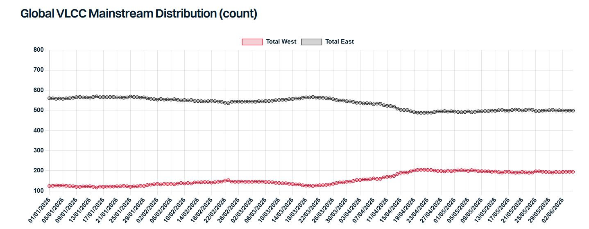

The global VLCC market appears to have entered a phase of cautious stabilisation with freight rates retracing from their war-driven peak back toward pre-war benchmarks. The severe freefall many anticipated from structural tonnage oversupply has so far been avoided. Negotiations between the US and Iran on a 60-day memorandum of understanding (MOU) to extend the ceasefire and reopen the Strait of Hormuz are ongoing, but final diplomatic signatures are still pending as key sticking points remain unresolved. Recent military strikes by both sides have only added to the uncertainty surrounding the talks.
The underlying freight fundamental picture remains highly nuanced. About 55 VLCCs remains trapped inside the Middle East Gulf, curtailing global VLCC tonnage supply. Both laden and ballaster counts in the East and West have begun stabilizing, taking roughly one and a half months after the onset of regional hostilities. Global VLCC ton-mile demand has contracted severely by a fifth, down from a 2025 monthly average of approximately 650,000 Mtm to a current baseline of around 530,000 Mtm, according to Kpler.
In response to the plunge in Middle Eastern barrels, total VLCCs positioning in the West has increased by approximately 60 units. A surge in western crude exports has absorbed the tonnage that fled the East. Led aggressively by the US exports, Atlantic crude exports to the East spiked to 9.46mbd over March-May, well above the 2025 baseline average of 8.16mbd. Approximately 500kbd of this incremental volume moved on long-haul VLCCs to the East, cushioning the global ton-mile drop. Additionally, as many of these westward ballasters are intentionally slowsteaming to stretch out voyages, actual prompt spot availability in the West is much tighter than the apparent vessel count suggests. Hence, the resilient demand and capped oversupply kept TD22 and TD15 TCE earnings at around $100,000/day in May, slightly above pre-war levels. The incremental US Gulf loading activity has also accelerated reverse lightering, boosting Aframax demand and triggering a notable dirty-to-clean trading switch.
In Middle East, unsanctioned and traceable crude and condensate export volumes fell further to approximately 7.59 mbd in May from 7.95 mbd in April. However, this decline masks an emerging workaround: ship-to-ship (STS) operations with transponder blackouts in the Gulf of Oman point to additional undeclared volumes clearing the market. The risk premium associated with the activities in Gulf of Oman has helped to keep TD34 spot rates broadly in line with pre-war TD3C levels despite a higher number of ballasters. Total number of VLCCs in the Gulf of Oman initially eased after the war broke out but has since rebounded to around 70–80 vessels, with roughly 60–65 of them in ballast. Aside from units actively arriving for STS operations, a handful of VLCCs are idling there, keeping regional spot supply artificially tight while perfectly positioning owners to instantly capture resurgent flows the moment the Strait of Hormuz reopens.
Looking ahead, the near-term trajectory of the VLCC market remains entirely hinged on the reopening of the Strait of Hormuz. As some owners are already showing interest to resume direct routing, an official deal will trigger an immediate operational pivot. The ballasters already waiting in the Gulf of Oman hold first-mover advantage to capture the initial wave of resurgent mainstream flows. This return of Middle Eastern barrels, alongside the risk premiums likely to be incurred until the regional situation fully stabilizes, are expected to support the East TCE rates. However, the speed and extent of rate firming remain strictly dependent on how quickly regional producers can structurally restore upstream production and export infrastructure once the Strait of Hormuz opens, as any prolonged operational lag will delay the physical tonnage squeeze. Meanwhile, Western benchmarks are poised to hold as the demand is expected to be resilient while the number of ballasters heading to the West falls. The remnant geopolitical risks compel refiners to continue diversifying their crude slates, sustaining robust long-haul demand for Atlantic alternatives.

Data source:Gibson Shipbrokers